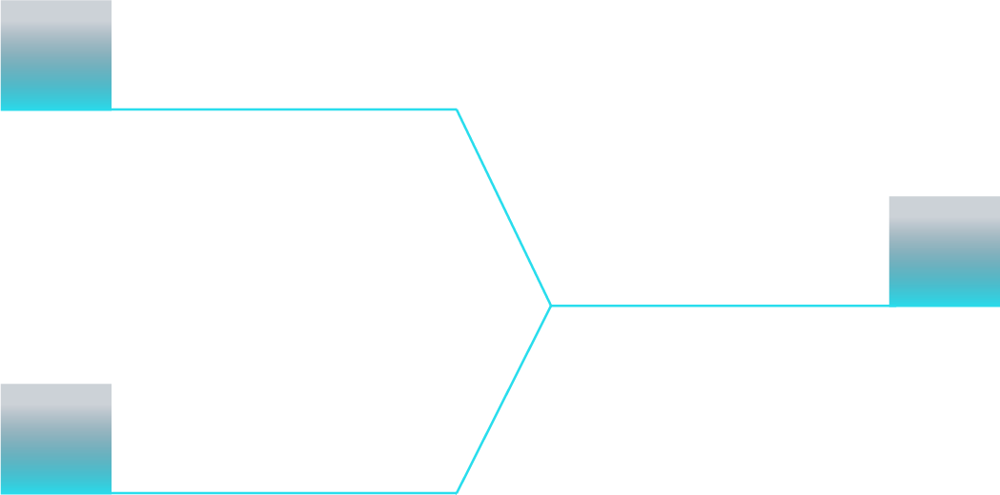

STARLIGHT
关于星荧
智能监测 · 安心陪伴 · 温柔守护关于我们
北京星荧科技有限公司是一家专业从事研发、设计、生产以及销售医疗器械产品的初创型科技企业。公司汇集了来自百度、科大讯飞、康明斯等公司的专业技术人员，得益于北京大学、北京科技大学、中国矿业大学的技术支持，具备专业医疗器械的机械结构设计、电子电路设计、软件算法开发、外观工业设计以及供应链生产管理能力。目前与北医三院多科室医生联合开发，打造一站式医工结合落地模式，致力于医疗机器人，AI视觉辅助，医用耗材等方向。

医医院临床需求+基金启动
工研发团队工程化落地
落技术成果落地转化
服务主旨
围绕临床需求驱动研发，以医院与科研合作为基础，实现技术工程化与产品落地，加速医疗机器人与康复系统的产业化转化。